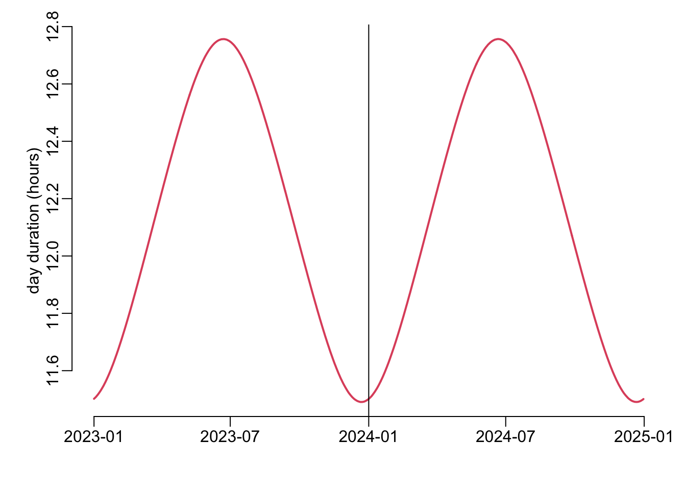
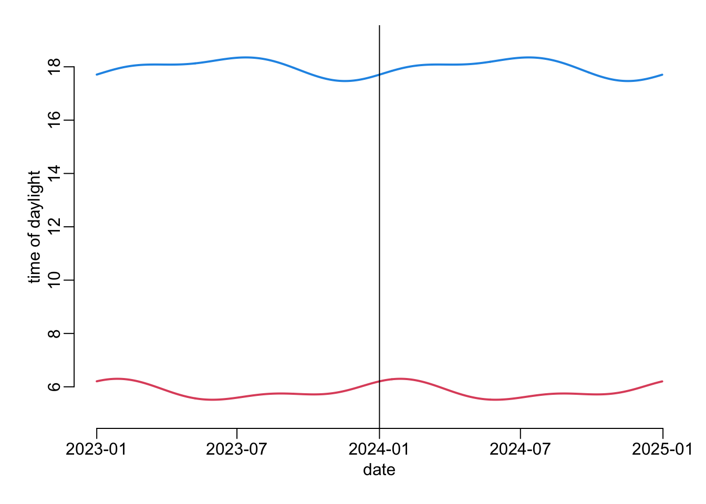
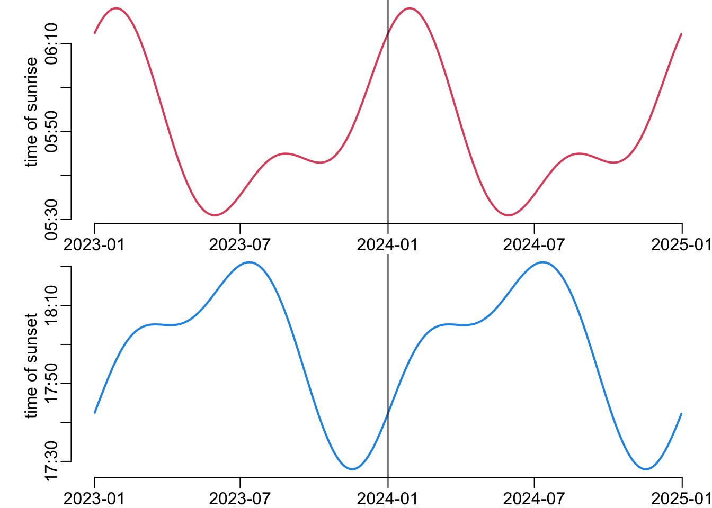
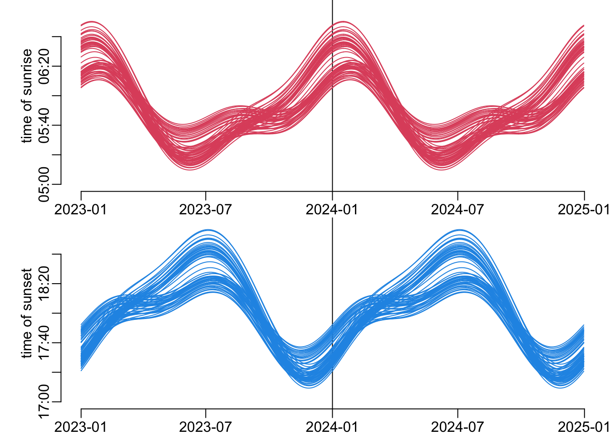

library(hms)
library(dplyr)
library(suncalc)
library(lubridate)
library(purrr)
library(sf)Sunrise and sunset in Vietnam
Whereas the durations of day and night as a function of time follow a sinusoid function, this is not the case for the timing of the sunrise and sunset because of the facts (i) that the orbit of the earth around the sun is an ellipse and not a circle and (ii) the rotation axis of the earth is tilted on the orbital plan. Here we illustrate all this in a given location.
Computing the sunrise and sunset times for Saigon for 2023 and 2024:
timings <- seq.Date(ymd(20230101), ymd(20241231), 1) |>
getSunlightTimes(lat = 10.802506629026347, lon = 106.73305962858632) |> # Saigon
select(date, sunrise, sunset) |>
mutate(across(-date, ~ .x + 7 * 60 * 60)) |> # UTC to ICT transformation
mutate(across(-date, as_hms)) |>
mutate(day_duration = sunset - sunrise)Looking at timings of earliest and latest sunrises and sunsets:
timings |>
arrange(sunrise) |>
head() date sunrise sunset day_duration
1 2023-05-29 05:30:55 18:12:45 45710 secs
2 2023-05-30 05:30:55 18:13:01 45726 secs
3 2023-05-31 05:30:55 18:13:18 45743 secs
4 2024-05-29 05:30:55 18:12:57 45722 secs
5 2024-05-30 05:30:55 18:13:13 45738 secs
6 2024-05-31 05:30:55 18:13:30 45755 secstimings |>
arrange(desc(sunrise)) |>
head() date sunrise sunset day_duration
1 2023-01-27 06:18:00 17:55:40 41860 secs
2 2023-01-28 06:18:00 17:56:06 41886 secs
3 2024-01-27 06:18:00 17:55:33 41853 secs
4 2024-01-28 06:18:00 17:55:59 41879 secs
5 2024-01-29 06:18:00 17:56:25 41905 secs
6 2023-01-26 06:17:59 17:55:14 41835 secstimings |>
arrange(sunset) |>
head() date sunrise sunset day_duration
1 2023-11-17 05:50:38 17:27:59 41841 secs
2 2024-11-17 05:50:56 17:27:59 41823 secs
3 2023-11-16 05:50:14 17:28:00 41866 secs
4 2023-11-18 05:51:02 17:28:00 41818 secs
5 2024-11-16 05:50:32 17:28:00 41848 secs
6 2024-11-18 05:51:21 17:28:00 41799 secstimings |>
arrange(desc(sunset)) |>
head() date sunrise sunset day_duration
1 2023-07-12 05:38:15 18:21:05 45770 secs
2 2023-07-13 05:38:31 18:21:05 45754 secs
3 2024-07-11 05:38:11 18:21:05 45774 secs
4 2024-07-12 05:38:27 18:21:05 45758 secs
5 2023-07-11 05:38:00 18:21:04 45784 secs
6 2023-07-14 05:38:46 18:21:04 45738 secsA tuning of the plot() function:
plot2 <- function(...) plot(..., type = "l", lwd = 2)The duration of the day as a function of time:
with(timings, plot2(date, day_duration / 60 / 60, col = 2, xlab = "",
ylab = "day duration (hours)"))
abline(v = ymd(20240101))
Timing of sunrise and sunset as a function time:
with(timings, {
plot2(date, sunrise / 60 / 60, col = 2, ylim = c(5, 19),
ylab = "time of daylight")
lines(date, sunset / 60 / 60, col = 4, lwd = 2)
})
abline(v = ymd(20240101))
An alternative to the previous plot:
opar <- par(mfrow = c(2, 1), plt = c(.1, .99, .12, 1))
with(timings, plot2(date, sunrise / 60 / 60, col = 2, xlab = "",
ylab = "time of sunrise", yaxt = "n"))
ats <- paste(rep(c("05", "06"), each = 6),
rep(sprintf("%02d", 10 * 0:5), 2), sep = ":")[4:8]
axis(2, at = time_length(hm(ats), "hours"), ats)
abline(v = ymd(20240101))
with(timings, plot2(date, sunset / 60 / 60, col = 4, xlab = "",
ylab = "time of sunset", yaxt = "n"))
ats <- paste(rep(c("17", "18"), each = 6),
rep(sprintf("%02d", 10 * 0:5), 2), sep = ":")[4:9]
axis(2, at = time_length(hm(ats), "hours"), ats)
abline(v = ymd(20240101))
par(opar)A function that calculates the timings of sunrise and sunset as a function of time (in 2023 and 2024) for a given location in the ICT time zone:
calculate_timings <- function(lat = 10.802506629026347, lon = 106.73305962858632) {
seq.Date(ymd(20230101), ymd(20241231), 1) |>
getSunlightTimes(lat = lat, lon = lon) |>
select(date, sunrise, sunset) |>
mutate(across(-date, ~ .x + 7 * 60 * 60)) |>
mutate(across(-date, as_hms)) |>
mutate(day_duration = sunset - sunrise)
}Computing the longitudes and latitudes of the barycenters of the provinces of Vietnam:
gadm1 <- readRDS("~/Desktop/gadm36_VNM_1_sf.rds")
st_crs(gadm1) <- st_crs(gadm1)old-style crs object detected; please recreate object with a recent sf::st_crs()
old-style crs object detected; please recreate object with a recent sf::st_crs()timings_list <- gadm1 |>
mutate(centroid = geometry |> st_centroid() |> st_coordinates(),
latitude = centroid[, "Y"],
longitude = centroid[, "X"]) |>
st_drop_geometry() |>
select(latitude, longitude) |>
with(map2(latitude, longitude, calculate_timings))Plotting the timing of sunrise and sunset as a function of time for the 63 provinces of Vietnam:
opar <- par(mfrow = c(2, 1), plt = c(.1, .99, .12, 1))
with(timings, plot(date, sunrise / 60 / 60, type = "n", xlab = "",
ylab = "time of sunrise", yaxt = "n", ylim = c(5, 7)))
ats <- paste(rep(c("05", "06"), each = 3),
rep(sprintf("%02d", seq(0, 40, 20)), 2), sep = ":")
axis(2, at = time_length(hm(ats), "hours"), ats)
abline(v = ymd(20240101))
walk(timings_list, ~ with(.x, lines(date, sunrise / 60 / 60, col = 2)))
with(timings, plot(date, sunset / 60 / 60, type = "n", xlab = "",
ylab = "time of sunset", yaxt = "n", ylim = c(17, 19)))
ats <- paste(rep(c("17", "18"), each = 3),
rep(sprintf("%02d", seq(0, 40, 20)), 2), sep = ":")
axis(2, at = time_length(hm(ats), "hours"), ats)
abline(v = ymd(20240101))
walk(timings_list, ~ with(.x, lines(date, sunset / 60 / 60, col = 4)))
par(opar)